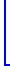
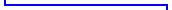
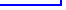
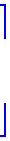
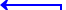
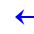
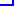
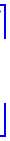
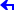

引擎调整：
1、糖尿病分层判断逻辑：
https://docs.qq.com/sheet/DUGVteWlLVER1bGxQ?tab=otqmyg
2、糖尿病分标判断逻辑：
https://docs.qq.com/sheet/DUGVteWlLVER1bGxQ?tab=155sh0
每日定时处理
糖尿病分层判断逻辑
糖尿病分标判断逻辑


分层完成
分标完成
随访任务生成
1、糖尿病的分标分层判断调整
2、根据分层结果，生成随访任务的逻辑调整
分层
首次分层
发生变层
高危层
生成糖尿病日常随访任务，任务标题为“糖尿病日常随访”，来源“分层管理”
数量：1个
计划执行时间：本次分层发生日期后的第30日
情形1：当下个“来源：分层管理”的糖尿病随访任务日期早于或等于当日后的30日，则不做任务删除处理；
情形2：当下个“来源：分层管理”的糖尿病随访任务日期晚于当日后的30日，则删除该任务，生成糖尿病日常随访任务，数量：1个，计划执行时间：本次分层发生日期后的第30日，任务标题为“糖尿病日常随访”，来源“分层管理”
中危层
生成糖尿病日常随访任务，任务标题为“糖尿病日常随访”，来源“分层管理”
数量：1个
计划执行时间：本次分层发生日期后的第60日
情形1：当下个“来源：分层管理”的糖尿病随访任务日期早于或等于当日后的60日，则不做任务删除处理；
情形2：当下个“来源：分层管理”的糖尿病随访任务日期晚于当日后的60日，则删除该任务，生成糖尿病日常随访任务，数量：1个，计划执行时间：本次分层发生日期后的第60日，任务标题为“糖尿病日常随访”，来源“分层管理”
低危层
生成糖尿病日常随访任务，任务标题为“糖尿病日常随访”，来源“分层管理”
数量：1个
计划执行时间：本次分层发生日期后的第90日
情形1：当下个“来源：分层管理”的糖尿病随访任务日期早于或等于当日后的90日，则不做任务删除处理；
情形2：当下个“来源：分层管理”的糖尿病随访任务日期晚于当日后的90日，则删除该任务，生成糖尿病日常随访任务，数量：1个，计划执行时间：本次分层发生日期后的第60日，任务标题为“糖尿病日常随访”，来源“分层管理”
红标会进行
危机值干预
90天内无血糖/糖化数据
自动生成一条“血糖监测提醒”任务
来源为“分层管理”的“糖尿病日常随访”任务 ，完成后会自动生成下个任务
分层
来源为“分层管理”的“糖尿病日常随访”任务 ，完成后
高危层
生成糖尿病日常随访任务，任务标题为“糖尿病日常随访”，来源“分层管理”
数量：1个
计划执行时间：本次任务完成日期后的第30日
中危层
生成糖尿病日常随访任务，任务标题为“糖尿病日常随访”，来源“分层管理”
数量：1个
计划执行时间：本次任务完成日期后的第60日
低危层
生成糖尿病日常随访任务，任务标题为“糖尿病日常随访”，来源“分层管理”
数量：1个
计划执行时间：本次任务完成日期后的第90日
#1
#1
#2
#2
分标
首次分标 或 发生变标
红标
若7天内，存在“来源：分标管理”的糖尿病日常随访任务，那不做任何处理；
若7天内，不存在“来源：分标管理”的任务，则生成糖尿病日常随访任务，任务标题为“糖尿病危机值干预”，来源“分标管理”，数量：1个，计划执行时间：本次分标发生日期后的第7日；
若7天外，存在“来源：分标管理”的糖尿病日常随访任务，那取消该任务，并生成....
若7天外，不存在“来源：分标管理”的糖尿病日常随访任务，那生成....
黄标
不产生分标管理类的任务
绿标
不产生分标管理类的任务
来源为“分标管理”的“糖尿病危机值干预”任务 ，完成后会自动生成下个任务
分标
来源为“分标管理”的“糖尿病危机值干预”任务 ，完成后
红标
生成糖尿病日常随访任务，任务标题为“糖尿病危机值干预”，来源“分标管理”
数量：1个
计划执行时间：本次任务完成日期后的第7日
黄标
不产生分标管理类的任务
绿标
不产生分标管理类的任务
已实现，要调整
💡借此机制让患者的近期血糖指标数据趋于正常，降到黄绿标
💡借此机制让任务不会无限数量生成，需要健管师做到日清
否则任务会越来越少
随访任务完成




仅根据
分层情况生成下一个随访任务
💡高危层降层时，实际不会引发任务的变化（如新增/删除任务）
#3
#3
随访任务完成



仅根据
分标情况生成下一个随访任务
随访任务完成
1、任务未完成时，不会自动生成新的“血糖检测提醒”任务
任务完成之后，才会允许生成新的血糖监测提醒
2、来源：“指标长时间未更新”